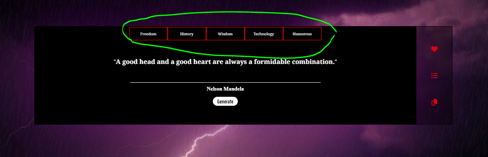
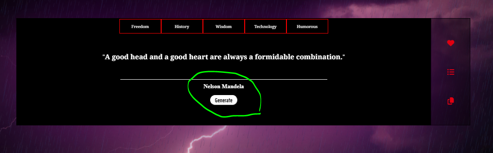
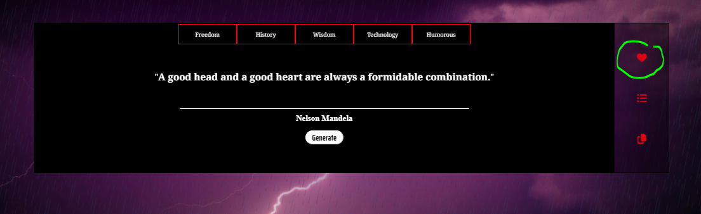
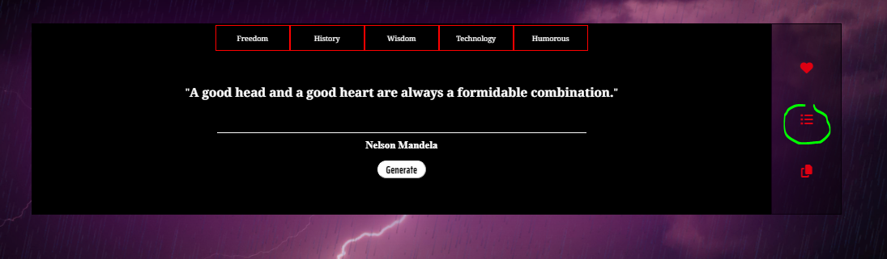
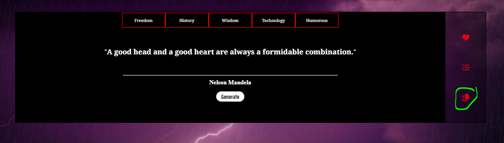

Guide to Divine Quotes
1. Start by choosing the genre you are intrested in by pressing any of the top buttons. (the default genre is wisdom)

2. Now that you've set the genre you simply press generate as many times till you find something you like.

3. When you've found something you like you can favorite it by pressing the heart symbol, saving it in your favorites list. (Limit of 10 quotes!)

4. Access the the list by simply pressing the bars symbol where you will the quotes, there will be even a clear and a save button. (Side note: Pressing clear will remove ALL quotes!)

5. For the third feature there is even a copy function, which sits below the list button it will copy any quote thats infront of you.

6. Now you should be a Divine Quotes veteran, one last thing though, if you face any issues or have any questions you can reach us using the "contact" button top right!